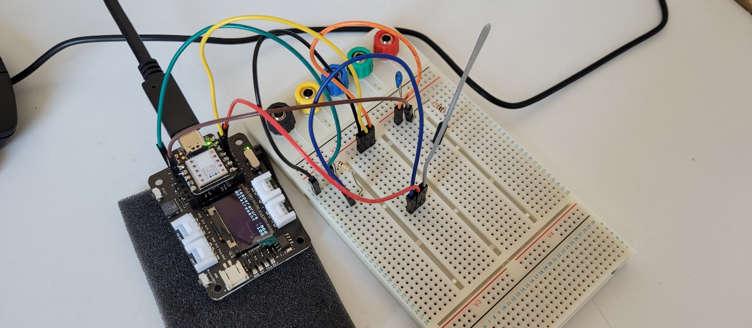
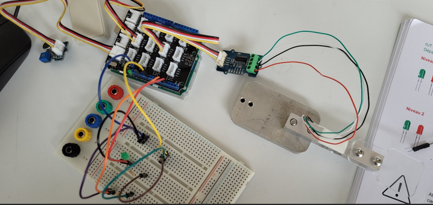
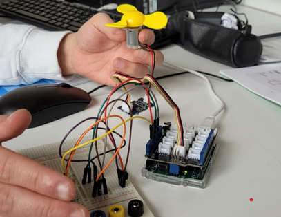
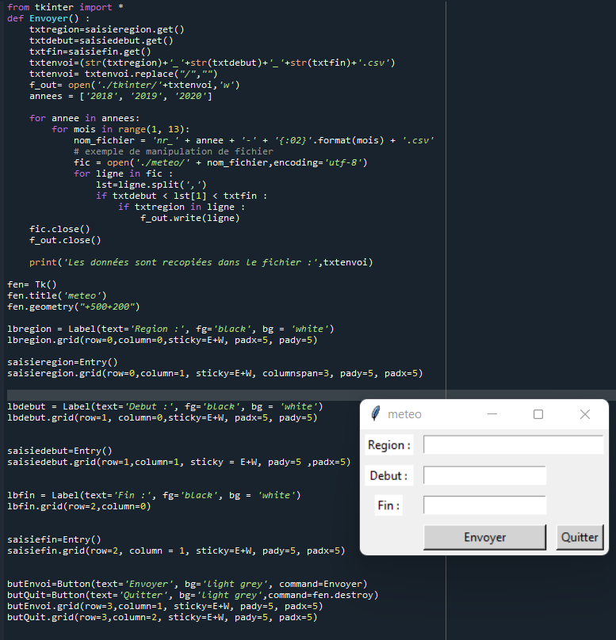
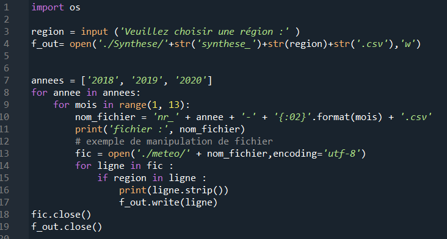

Lors de ma formation, j'ai acquis de nombreuses compétences, que ce soit dans le domaine de l'informatique ou bien dans le domaine de l'électronique. Je vais présenter une de ces compétence ci dessous avec un exemple de travail réalisé avec une description de ce dernier.
Mettre en oeuvre une chaîne de mesure simple, piloter un instrument de façon élémentaire






Identifier des couples capteurs selon la mesure demandée
Sur cette photo, nous pouvons voir un capteur de fréquence cardiaque. Lors de ce travail,je devais prendre des mesures de fréquence cardiaque et établir un code Arduino pour le faire fonctionner. Le capteur était connecté à une plaque Arduino
Acquérir et numériser des signaux analogiques
Pour ce travail, je devais créer un code Arduino pour acquérir les valeurs des capteurs de température et d'éclairement branchés sur la plaque de prototypage. Ensuite, je devais afficher ces valeurs sur l'écran LED lui-même connecter sur la plaque Arduino.
Choisir un instrument de mesure adapté au signal
Ce montage simule un lit d'hôpital, lorsque un poids est exercé sur le capteur de pesée, cela veut dire qu'un patient est sur le lit. Si le capteur de niveau sonore détecte une trop grande sonorité (le patient appelle à l'aide) et que quelqu'un est detécté sur le lit, alors la LED rouge s'active. Le capteur de fréquence cardiaque, permet d'allumer brièvement la LED verte à chaque battements du coeur.
Traiter avec ou sans régulation un signal analogique
Lors de ce TP ( Travaux Pratiques ), je devais réaliser un code Arduino permettant de simuler un espace de culture de végétaux. Le code doit permettre au ventilateur de tourner il y a trop de chaleur captée par le capteur de température, et si et seulement si le capteur de lumière indiqu une valeur élevée, qui correspond au jour et la nuit. Le ventilateur était lui-même branché à une plaque de prototypage et à une plaque Arduino.
Concevoir un algorithme pour le traitement des données ou le pilotage d'un instrument
Grâce à ce code Python, une interface graphique est créée dès lors que le programme s'éxécute. L'utilisateur doit alors renseigner le nom de la région et les dates de début et de fin qu'il souhaite. Avec ces informations, le programme va alors créer un fichier Excel dans lequel toutes les données météo de la région et des dates choisies seront recensées.
Utiliser un langage de programmation permettant la mise en place d'un algorithme
Lors de ce travail, j'ai utilisé le language Python. Ce code permet à l'utilisateur de renseigner une région qu'il souhaite et il va alors créer un fichier avec le nom de la région, permettant à l'utilisateur d'observer les données de la météo de la région souhaitée des années 2018, 2019 et 2020.